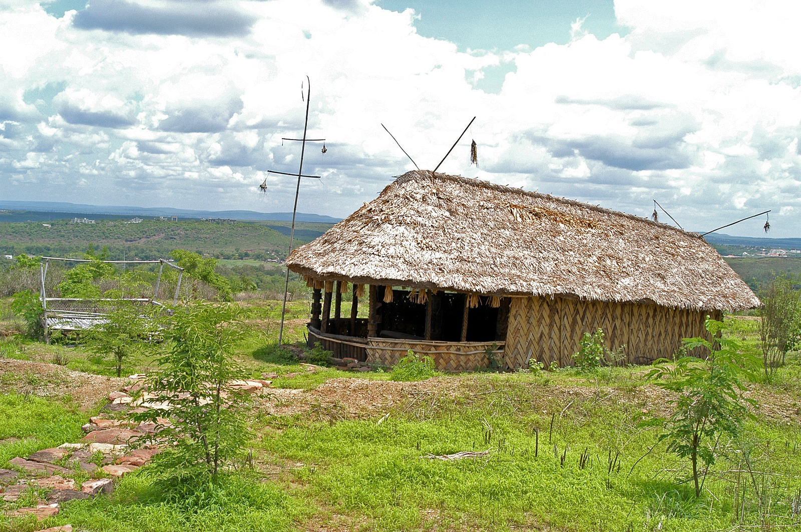
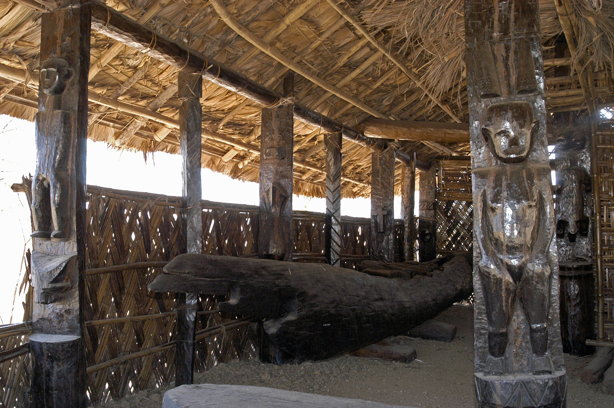
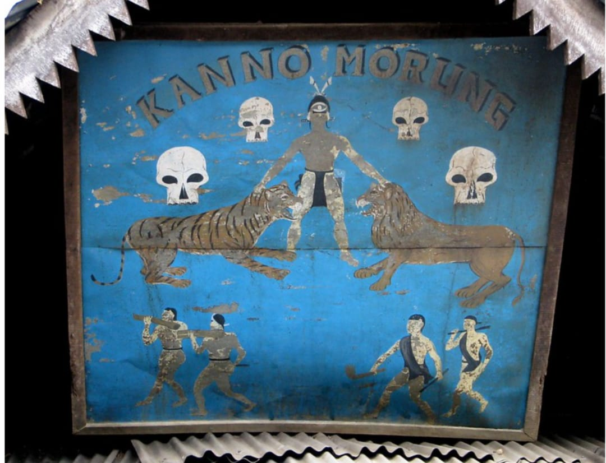
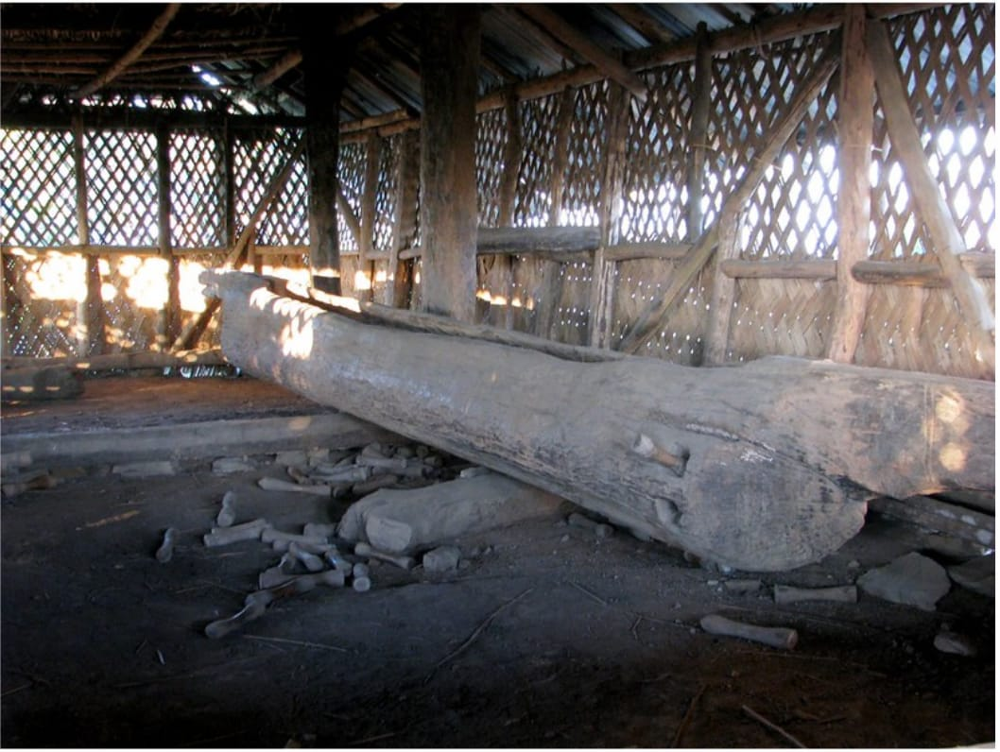

KONYAK NAGA · NAGALAND
कोन्याक नागा · नागालैंड
Konyak Naga
Youth Dormitory
कोन्याक नागा
युवा छात्रावास
The Morung of the Konyak Naga Community
कोन्याक नागा समुदाय का मोरुंग
A traditional institution of learning, culture and community life.
सीखने, संस्कृति और सामुदायिक जीवन की एक पारंपरिक संस्था।
INTRODUCTION
परिचय
A place where knowledge moved between generations.
एक ऐसा स्थान जहाँ ज्ञान पीढ़ियों के बीच आगे बढ़ता था।
The Konyak Naga Youth Dormitory, traditionally known as the Morung, was an important social institution among the Konyak Nagas of Nagaland. It served as a centre where young members of the community learned traditional knowledge, warfare skills, social responsibilities, customs and cultural practices.
कोन्याक नागा युवाओं का छात्रावास, जिसे पारंपरिक रूप से मोरुंग कहा जाता है, नागालैंड के कोन्याक नागा समुदाय की एक महत्वपूर्ण सामाजिक संस्था थी। यह युवाओं के लिए पारंपरिक ज्ञान, युद्ध कौशल, सामाजिक जिम्मेदारियों, रीति-रिवाजों और सांस्कृतिक परंपराओं को सीखने का केंद्र था।
ABOUT THE OBJECT
वस्तु के बारे में
Architecture shaped by community life
सामुदायिक जीवन से आकार पाई स्थापत्य परंपरा

The Morung as a cultural space
सांस्कृतिक स्थान के रूप में मोरुंग
This reconstructed Konyak Morung represents the traditional architectural heritage of the community. Built using locally available materials such as wood, bamboo and thatch, the structure reflects the close relationship between the Konyak people and their natural environment.
यह पुनर्निर्मित कोन्याक मोरुंग समुदाय की पारंपरिक स्थापत्य विरासत को दर्शाता है। लकड़ी, बांस और घास जैसी स्थानीय सामग्रियों से निर्मित यह संरचना कोन्याक लोगों और उनके प्राकृतिक पर्यावरण के बीच संबंध को प्रदर्शित करती है।
VISUAL DOCUMENTATION
दृश्य दस्तावेज़
Look closely at the Morung
मोरुंग को करीब से देखें
Architectural details, interior objects and the visual language of the building.
स्थापत्य विवरण, आंतरिक वस्तुएँ और भवन की दृश्य भाषा।


TRADITIONAL ARCHITECTURE
पारंपरिक वास्तुकला
Wood, bamboo, thatch and carved elements
लकड़ी, बांस, घास और नक्काशीदार तत्व
The Konyak Morung is characterised by a large thatched roof, wooden pillars, bamboo walls and carved wooden elements. The structure was designed as a communal space where young men gathered, learned and participated in community activities.
कोन्याक मोरुंग अपनी विशाल घास की छत, लकड़ी के स्तंभ, बांस की दीवारों और नक्काशीदार लकड़ी के तत्वों के लिए प्रसिद्ध है। यह एक सामुदायिक स्थान था जहाँ युवा पुरुष एकत्रित होते थे, सीखते थे और सामाजिक गतिविधियों में भाग लेते थे।
LIFE INSIDE
अंदर का जीवन
Learning beyond the family
परिवार से परे सीखने का स्थान
The Morung functioned as a centre of education outside the family. Elders transferred oral traditions, legends, craftsmanship, hunting knowledge and social values to younger generations.
मोरुंग परिवार के बाहर शिक्षा का केंद्र था। बुजुर्ग लोग मौखिक परंपराओं, कथाओं, हस्तशिल्प, शिकार ज्ञान और सामाजिक मूल्यों को नई पीढ़ी तक पहुँचाते थे।
OBJECT GALLERY
वस्तु दीर्घा
Explore the visual record
दृश्य अभिलेख देखें
SOURCES & ACKNOWLEDGEMENT
स्रोत एवं आभार
Documentation behind this digital object
इस डिजिटल वस्तु के पीछे का दस्तावेज़ीकरण
This digital documentation has been prepared for the visitors of Indira Gandhi Rashtriya Manav Sangrahalaya (IGRMS), Bhopal. Information has been compiled from academic research papers, museum documentation and published studies on Konyak Naga cultural heritage.
यह डिजिटल दस्तावेज़ इंदिरा गांधी राष्ट्रीय मानव संग्रहालय (IGRMS), भोपाल के आगंतुकों के लिए तैयार किया गया है। इसमें कोन्याक नागा सांस्कृतिक विरासत से संबंधित शोध पत्रों, संग्रहालय दस्तावेज़ों और प्रकाशित अध्ययनों से जानकारी संकलित की गई है।
- Konyak Naga cultural studies and ethnographic research papers
- Indira Gandhi Rashtriya Manav Sangrahalaya (IGRMS) documentation
- Museum object research and field documentation
- कोन्याक नागा सांस्कृतिक अध्ययन एवं नृवंशविज्ञान शोध पत्र
- इंदिरा गांधी राष्ट्रीय मानव संग्रहालय (IGRMS) का दस्तावेज़ीकरण
- संग्रहालय वस्तु अनुसंधान एवं क्षेत्रीय दस्तावेज़ीकरण
ACKNOWLEDGEMENT
आभार
Special acknowledgement to IGRMS, Bhopal for preserving and presenting the cultural heritage of India's indigenous communities.
भारत के स्वदेशी समुदायों की सांस्कृतिक विरासत को संरक्षित और प्रस्तुत करने के लिए IGRMS, भोपाल का विशेष आभार।